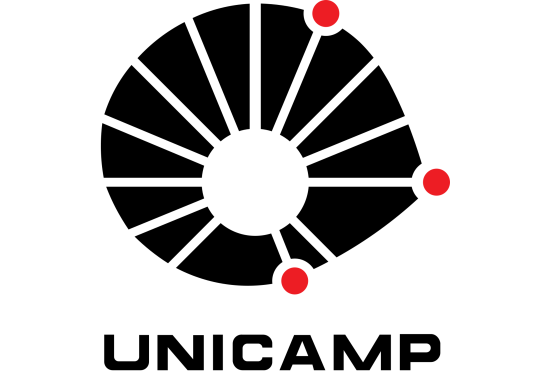
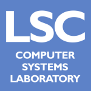
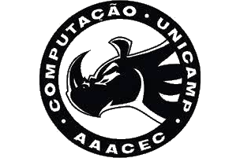

Work Experience
Coffeenauts
Senior Software Engineer
oct/2020 - on going
-
Working on a new unannounced title
- Managing a team of developers to build a vertical slice of the game
- Built a unique rendering system that can downsample models in runtime, together with a post-processing stack compatible with it
-
Worked on Spacelines from the Far Out, a multi-platform rogue-lite space themed game
- Implemented online multiplayer using the Photon networking platform
- Built custom shaders to better fit the 3D artists workflow, expand the available options beyond the default Unity Standard Shader and optimize video memory usage
- Worked on various supporting systems and tools that sit at the core of the game, tracking assets and their metadata in order to improve the games usage of available resources
- Maintain and configure the company infrastructure, such as version control systems and project management tools
- Implemented Xbox Live and Steamworks integration, as well as porting the game to these respective platforms
 Samsung
Security researcher
jan/2020 - aug/2020
Samsung
Security researcher
jan/2020 - aug/2020
- Researched and developed defensive security solutions to protect Samsung Android devices from many types of attacks, focusing on reducing attack surface and finding exploits
Aware
Full-stack developer
apr/2019 - dez/2019
- Worked on the backend server using TypeScript to build ORM queries and serve an API
- Built a framework to export reports using data from a Postgres database
- Worked on the front end Angular app that showed all the cargo being tracked by the app, using Google Maps to trace each cargo route for easy visualization
EiTV
iOS developer
jan/2018 - aug/2018
- Developed a custom video player for m3u8 playlists on iOS devices, using the proprietary company’s API to stream video using Swift
Academic Experience

Unicamp
Bachelor's degree in Computer Science
feb/2015 - jun/2020
Unicamp
Teaching Assistant
aug/2017 - dec/2017 & aug/2018 - dec/2018
- Helped students with assignments and studying for tests
- On an introductory course about C programming and simple algorithms
- On an advanced course about assembly language and processor inner workings

Computer Systems Laboratory (LSC)
Researcher
feb/2019 - jun/2020
- Applied cutting edge techniques to implement approximations on a CPU simulator
- Showed benefits to performance and power consumption at the cost of accuracy
- Focused on showing that the approximations work well independently of the architecture by porting MIPS approximations to RISC-V

Student Body for Sport Practice (AAACEC)
Head of events
oct/2016 - oct/2017
- Worked as Head of Events of the Student Organization for Sport Practice (AAACEC)
- Managed a team of about 20 people, organizing events for the whole university